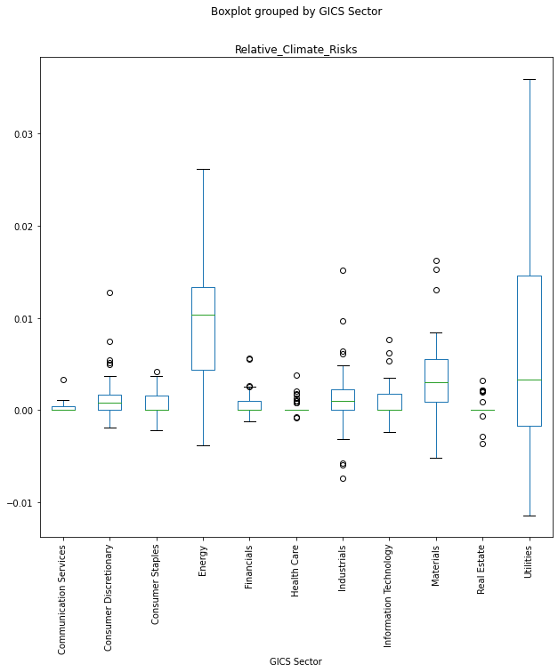
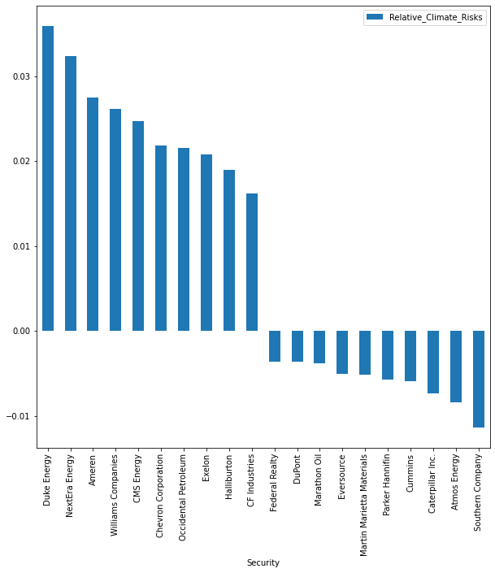

Climate Risks Hedging
Contents
Climate Risks Hedging#
In this part, we propose an exploratory approach of Natural Language Processing usages for constructing a climate risks hedged version of the S&P 500.
While Gorgen et al. (2020) [GJN+20] and Roncalli et al. (2020) [RGL+20] use a factor-based approach to estimate firm’s loading to the systematic carbon risk (with a Brown-Minus-Green Factor), we propose to follow Sautner et al. (2020) [SvLVZ20] and Hu et al. (2022) [HLY22] by estimating directly a firm-level measure of exposure to climate risks using text mining.
In contrast to Gorgen et al. (2020) [GJN+20] and Roncalli et al. (2020) [RGL+20], this approach allows us to address both transition and physical risks.
Using Earnings Calls Transcripts for a Firm-Level Estimate of Climate Risks Exposure#
We follow Sautner et al. (2020) [SvLVZ20] and Hu et al. (2022) [HLY22] in constructing firm-level measure of exposure to climate risks using earnings calls transcripts.
We apply the framework described previously, using the keywords contained in the earnings calls transcripts of S&P 500 firms, as \(K^{transcripts}_{i,t}\).
Below is the Python code loading the transcripts data and extracting the keywords, with the csv file located in the materials folder:
import pandas as pd
transcripts = pd.read_csv('sandp_transcripts.csv')
from keyphrase_vectorizers import KeyphraseCountVectorizer
vectorizer = KeyphraseCountVectorizer(stop_words = 'english')
list_K = [vectorizer.fit([i]).get_feature_names_out().tolist() for i in tqdm(transcripts['transcript'].tolist())]
We use the list of initial keywords from Sautner et al. (2020) [SvLVZ20] as the source for our theme-specific keywords \(S^{transition}\) and \(S^{physical}\).
Below is the Python code to retrieve the climate risks keywords, located in the materials folder:
risks_keywords = pd.read_excel('Risks_keywords.xlsx')
S_transition = risks_keywords[risks_keywords.Climate_risk == 'Transition']['Keyword'].tolist()
S_physical = risks_keywords[risks_keywords.Climate_risk == 'Physical']['Keyword'].tolist()
For example, transition keywords are:
['heat power',
'renewable energy',
'electric vehicle',
'clean energy',
'new energy',
'wind power',
'wind energy',
'solar energy',
'plug hybrid',
'renewable resource',
'solar farm',
'electric hybrid',
'rooftop solar',
'sustainable energy',
'hybrid car',
'renewable electricity',
'wave power',
'geothermal power',
'greenhouse gas',
'reduce emission',
'carbon emission',
'carbon dioxide',
'gas emission',
'air pollution',
'reduce carbon',
'energy regulatory',
'carbon tax',
'carbon price',
'environmental standard',
'nox emission',
'emission trade',
'dioxide emission',
'epa regulation',
'energy independence',
'carbon reduction',
'carbon market',
'mercury emission']
Below is the Python code to find the climate risks related keywords:
from sentence_transformers import SentenceTransformer, util
import torch
ST = SentenceTransformer('all-MiniLM-L6-v2')
list_emb_K = [ST.encode(sent, convert_to_tensor=True) for sent in tqdm(list_K)]
emb_S_transition = ST.encode(S_transition, convert_to_tensor=True)
emb_S_physical = ST.encode(S_physical, convert_to_tensor=True)
def get_related_keywords(emb_S:list, emb_K:list) -> list:
list_hits = [util.semantic_search(sent, emb_S, top_k=1) for sent in tqdm(list_emb_K)]
list_T = []
for sent in tqdm(list_hits):
T = []
for i in range(len(sent)):
if sent[i][0]['score'] >= 0.6:
T.append(i)
list_T.append(T)
return list_T
list_T_transition = get_related_keywords(emb_S = emb_S_transition,
emb_K = list_emb_K)
list_T_physical = get_related_keywords(emb_S = emb_S_physical,
emb_K = list_emb_K)
We obtain two different rough exposure measures:
and
That can be summed in order to get the rough climate risks exposure:
Below is the Python code to obtain the rough exposure score:
transcripts['Absolute_Transition_Risk'] = [len(list_T_transition[i]) / len(list_K[i]) for i in range(len(list_T_transition))]
transcripts['Absolute_Physical_Risk'] = [len(list_T_physical[i]) / len(list_K[i]) for i in range(len(list_T_physical))]
Absolute vs. Relative Climate Risks Exposure#
However, as we’ve denoted above, our current exposure measure is a rough measure in the sense that it doesn’t distinguish between positive or negative mention of the risk discussed. This distinction is related to the distinction between relative and absolute risk made by Roncalli et al. (2020) [RGL+20].
Relative risk measure objective is to be more exposed to firms positively exposed to climate risks and less exposed to firms negatively exposed to climate risks. On the other side, absolute climate risks considers that both large positive and negative climate risks exposure incur a financial risk that must be reduced. In what follow, we will focus on relative risk measure.
Our rough climate risks exposure measure doesn’t comes with any sign associated with, as it only measure the percentage of keywords from the transcripts related to one of the climate risks. It is not directly comparable to the carbon risk measure from Roncalli et al. (2020) [RGL+20] resulting from a multi-factor regression approach with a positive or negative sign associated with it.
To transform our rough measure to a relative risk measure, we follow Hu et al. (2022) [HLY22] by applying FinBERT to identify the sentiment behind each keyword from the transcripts identified as related to one of the climate risks, considering the context of this keyword.
We first need to find \(p^{k^{transition}_{i,t}}\) and \(p^{k^{physical}_{i,t}}\) the paragraphs where the keywords are located with a simple regular expression search.
We apply FinBERT on the sentences in order to obtain \(Sentiment^{transition}_{i,t}\) and \(Sentiment^{physical}_{i,t}\), that can take the value of -1 (negative), 1 (positive), or 0 (corresponding to a neutral tone).
We finally get a modified exposure measure \(RExposure^{transition}_{i,t}\) and \(RExposure^{physical}_{i,t}\) by the corresponding sentiment score \(Sentiment^{transition}_{i,t}\) and \(Sentiment^{physical}_{i,t}\).
The final exposure measure is computed as the rough one:
Below is the Python code to locate the climate risks related sentences:
import numpy as np
def get_paragraphs_related(list_transcripts:list, list_T:list, list_K:list) -> list:
# get the keywords extracted from the transcripts flagged as related to the theme
list_keywords_related = [[list_K[j][i] for i in list_T[j]] for j in range(len(list_K))]
# get transcripts in the format of list of paragraphs
list_transcripts_paragraphs = [sent.split('. ') for sent in list_transcripts]
list_paragraphs = []
# get the paragraphs mentioning the related keywords
for t in tqdm(range(len(list_transcripts))):
if len(list_keywords_related[t]) > 0:
list_paragraphs_related = [any(ele in list_transcripts_paragraphs[t][i] for ele in list_keywords_related[t]) for i in range(len(list_transcripts_paragraphs[t]))]
list_related = np.where(list_paragraphs_related)[0].tolist()
paragraphs_related = [list_transcripts_paragraphs[t][i] for i in list_related]
if len(paragraphs_related) > 0:
paragraph = '. '.join(paragraphs_related)
else:
paragraph = ' '
else:
paragraph = ' '
list_paragraphs.append(paragraph)
return list_paragraphs
list_paragraphs_transition = get_paragraphs_related(list_transcripts = transcripts['transcript'].tolist(),
list_T = list_T_transition,
list_K = list_K)
list_paragraphs_physical = get_paragraphs_related(list_transcripts = transcripts['transcript'].tolist(),
list_T = list_T_physical,
list_K = list_K)
and here is the code to get the sentiment associated with the climate risks related measures:
from transformers import BertTokenizer, BertForSequenceClassification
from transformers import pipeline
finbert = BertForSequenceClassification.from_pretrained('yiyanghkust/finbert-tone',num_labels=3)
tokenizer = BertTokenizer.from_pretrained('yiyanghkust/finbert-tone')
nlp = pipeline("sentiment-analysis", model=finbert, tokenizer=tokenizer)
def get_sentiment(list_transcripts:list, list_T:list, list_K:list, nlp_model) -> list:
"""Get the tone of the paragraph (positive, neutral or negative)"""
list_paragraphs = get_paragraphs_related(list_transcripts = list_transcripts,
list_T = list_T,
list_K = list_K)
results = nlp([paragraph[:512] for paragraph in tqdm(list_paragraphs)])
results_num = []
for i in range(len(results)):
if results[i]['label'] == 'Positive':
results_num.append(1)
elif results[i]['label'] == 'Negative':
results_num.append(-1)
else:
results_num.append(0)
return results_num
results_transition = get_sentiment(list_transcripts = transcripts['transcript'].tolist(),
list_T = list_T_transition,
list_K = list_K,
nlp_model = nlp)
results_physical = get_sentiment(list_transcripts = transcripts['transcript'].tolist(),
list_T = list_T_physical,
list_K = list_K,
nlp_model = nlp)
The final step (obtaining the relative climate risks score) is implented in Python as the following:
transcripts['Relative_Transition_Risk'] = transcripts['Absolute_Transition_Risk'] * results_transition
transcripts['Relative_Physical_Risk'] = transcripts['Absolute_Physical_Risk'] * results_physical
transcripts['Relative_Climate_Risks'] = transcripts['Relative_Transition_Risk'] + transcripts['Relative_Physical_Risk']
Climate Risks Exposure in the S&P 500 Universe#
In terms of differences in sector exposure to climate risks, it seems that Energy and Utilities are by far the most exposed sectors. The exposure seems to be biased towards positive value according to the boxplot below:

Below is a bar plot with the 10 most positively and 10 most negatively exposed securities to climate risks:

Below is an extract of the sequence in the Duke Energy’s earnings call transcript found as transition-related, and labelled as positive:
She will also share insights on the company’s long-term strategy and clean energy investment plans. These results were driven by higher earnings at our electric utilities from rate case activities, strong O&M and other mitigation actions and growth in our Commercial Renewables business. I am very proud of our workforce for their consistent focus on reducing costs and driving efficiencies to offset a number of headwinds this year while continuing to provide outstanding service for our customers. We expect to deliver at the top end of the 4% to 6% range through 2024 grounded in our robust investment plan to deliver cleaner energy and sustainable value for our communities and our industry-leading cost efficiency programs. We shared our vision in the significant runway of growth potential during our October 9th inaugural ESG Investor Day. During the event, we outlined the investment opportunities we are pursuing to support our goal to achieve net-zero carbon emissions by 2050. And while we are already an industry leader in carbon-free generation we have near-term ambitious plans to double our renewables portfolio by 2025, deploy energy storage across the Carolinas and Florida and extend the licenses of our nuclear fleet all to the benefit of our customers and communities.
Despite this good example example, we were not entirely conviced by results of the relative climate risks measure after a qualitative review. We think much work is needed before obtaining a consistent signal of exposure to climate risks:
The selection of climate risks related paragraphs is too noisy in our sense, with, in many cases, part of the transcripts selected while not really focused on climate risks. This leads to noisy raw inputs for the sentiment classifier. This could be improved by improved selection of specific keywords.
We use FinBERT as a zero-shot classifier. However, climate risks is a specific topic with ambiguous vocabulary used for describing positive or negative situation. To improve the sentiment classification and the resulting relative measure, we should fine-tune the FinBERT model with some labelled examples.
Due to these important drawbacks with these firsts results, we decide to stop here the investigation for the moment, as a potential portfolio built upon this measure wouldn’t be consistent at the moment.